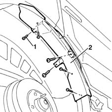
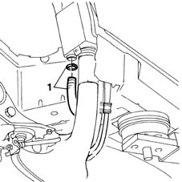
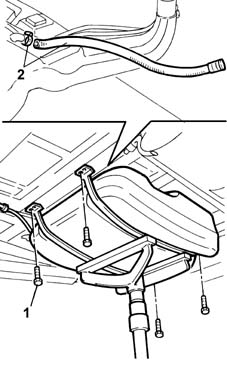

1080E41 tank - separator line - r r
- Path
- Procedures > 10 ENGINE UNIT > 1080 EXHAUST EMISSION CONTROL SYSTEM > 1080E evaporation control system > 1080E41 tank - separator line - r r
- Kind
- repair procedure (removal / refitting; the operation number is the code)
- Applies to
- engines: 1.6 16v; all production periods
- Interactive page
- https://sloeber94.github.io/elrnDB-fMltpl/en/#/2891311
Applies to: engines: 1.6 16v; all production periods
 Removing
Removing
 Refitting
Refitting4450B11 WHEEL (one) rear - R.R.
Raise the car.
1. Undo the retaining bolts.
2. Remove the fuel filler pipe plastic protection.

Applies to: engines: 1.6 16v; all production periods
1. Disconnect the connection pipe to the tank from the supplementary vapour separator.

Applies to: engines: 1.6 16v; all production periods
1. Undo the retaining bolts.
Lower the tank to gain access to the point at which the separator pipe is connected to the tank.
2. Disconnect the pipe from the fitting on the tank and remove.

Applies to: engines: 1.6 16v; all production periods
Refitting
RemovingConnect the pipe to the fuel tank.
Raise the tank and screw in the retaining bolts.
Connect the pipe to the supplementary vapour separator.
Fit the filler pipe plastic protection.
Lower the vehicle.